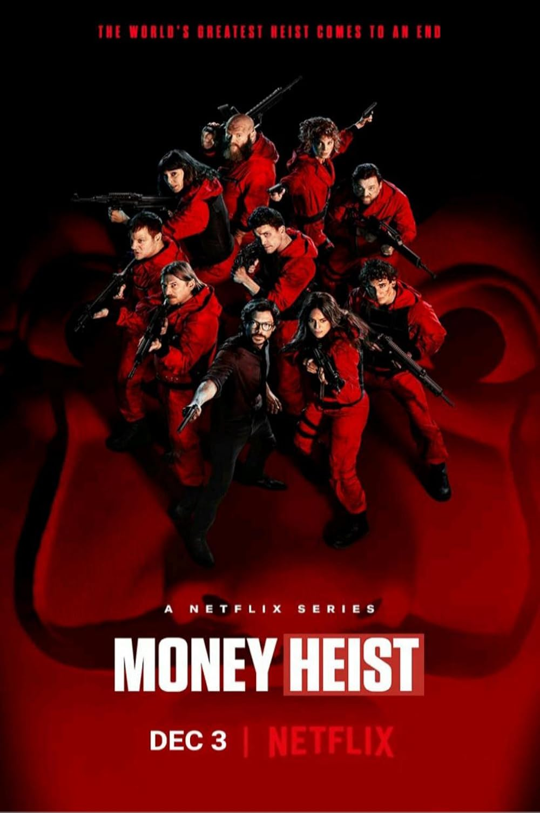
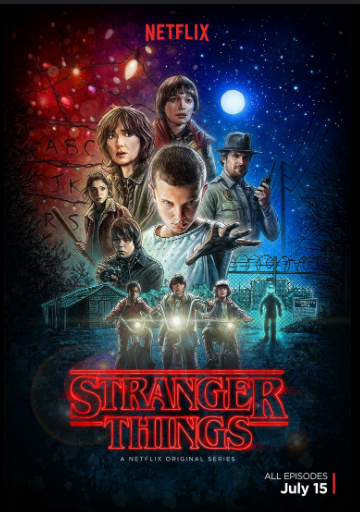

Shows Covered:
- Breaking Bad
- The Last of Us
- The Bear
- Money Heist
- Stranger Things
Breaking Bad
Breaking Bad has been rated as the best TV show of all time and I firmly believe it deserves that title. Every single character in the show is played so well by their actors. I don't think there's one charater in the show that was acted out poorly. Bryan Cranston and Aaron Paul, in my opinion, pulled off some of the best acting I have ever seen. The plot was so well designed and the pacing of the show was perfect. There's a reason the show is so popular, even today.

The Last of Us
The people behind both the game and show for The Last of Us have to be labeled as geniuses. The video game version of The Last of Us is iconic and by far one of the best video games of all time.
The same can be said for the TV show adaptation for The Last of Us. The directors for the show chose the perfect actors to play Joel and Ellie. Pedro Pascal not only looks similar to Joel but replicates him very well.
Bella Ramsey plays Ellie well for the most part, however there are some moments where she doesn't replicate Ellie as well as she could but maybe this is me nitpicking. The cinematography in The Last of Us is breathtaking. It's not only beautiful but
the angles play a part in the story telling. Overall, I hope to see more of this show and what it has to offer because I truly think it can be one of the best shows to come out within the last ten years.

The Bear
The Bear, set right here in downtown Chicago. For me, this show plays out like a piece of complex art. When people think of a show about a restaurant, they think the only thing they'll be seeing is the restaurant and its ups and downs. But what The Bear does differently is that it goes much deeper than the ownership of a restaurant. The plot twists and different plot lines, it dives deep into the family history and drama of Carmy, played by Jeremy Allen White, along with the history of all the other show members. This show is so complex yet so simple, its no wonder this show is so highly rated. Jeremy Allen White, known for his role in Shameless (another Chicago show) seems to be the perfect actor to play Carmy. The Bears plot just leaves you wanting more and more after every episode. The pace of the show is set perfectly the setting of Chicago offers a unique feeling. Honetly, I hope more shows are set in Chicago.

Money Heist
Money Heist may have some of the best character development I have ever seen. Combine that will extremely well choreographed action scenes and you have a show that could keep you glued to your screen for hours on end. This show is layered with so many different themes, and its all balanced perfectly to where you don't forget that the main goal is to rob the Mint of Spain. The directors blend the themes and the central objective of the show extremely well. They do this so well that eventually the show makes you root for the thieves. Every single Character in Money Heist is explored and has an incredibly rich and interesting story line. It's incredible how such a basic idea for a TV Show can be turned into a well executed and riveting metaphor for resistance.
Stranger Things
One of the main reasons I love Stranger Things as a show is the date the show is set in. Set in the 1980's, it brings this nostalgic feeling of when times were better and simpler. For a while, I didn't want to watch Stranger Things because I thought the ratio between real life and Sci-fi would be blown out of proportion and I would get bored of the show quickly. However, the directors found the perfect balance between reality and Sci-fi. The plot lines are incredibly written to the point where after I finished the show, I watched youtube videos explaining the show more in detail. It's difficult to put into words how well written this show is, it's a show you just have to watch and experience. This show masters the sets the actors act in. The eerie vibe of the Hawkins Lab and the small town feeling of Hawkins gives off this feeling as if there is something more to Hawkins besides it being a little town 